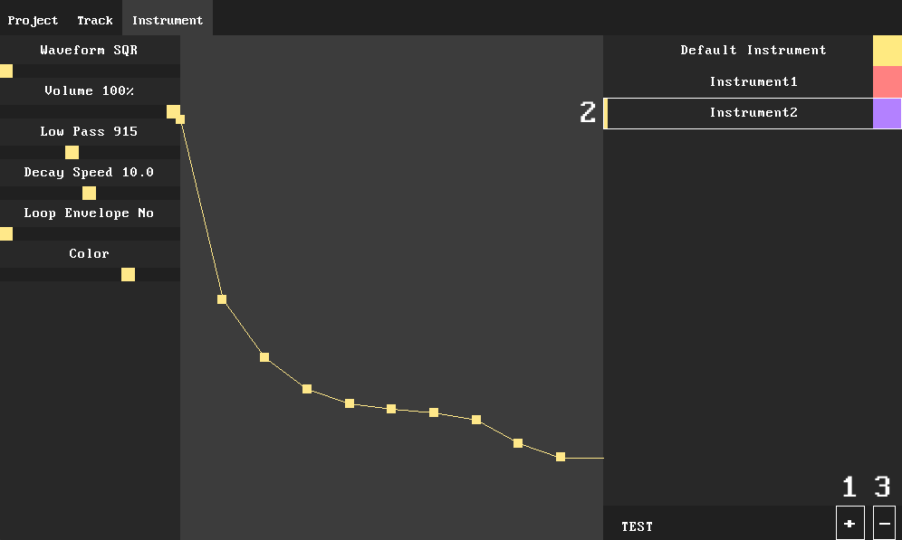

Instrument Page
The Instrument Page is used to edit the instruments used in the song.
Instrument List
To create an Instrument, navigate to the Instrument tab and press the '+' in the bottom right[1].
To select an Instrument, click on its name in the instrument list[2]. To delete the selected Instrument, press the '-'[3].

Editing an Instrument
You can change most properties on an Instrument using the sliders in the left panel.
The middle part of the screen is occupied by an envelope editor. To edit the envelope,
drag the control points up / down.